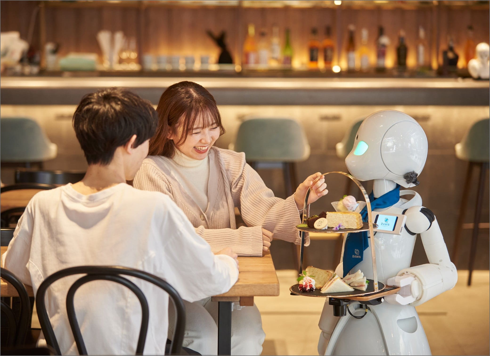
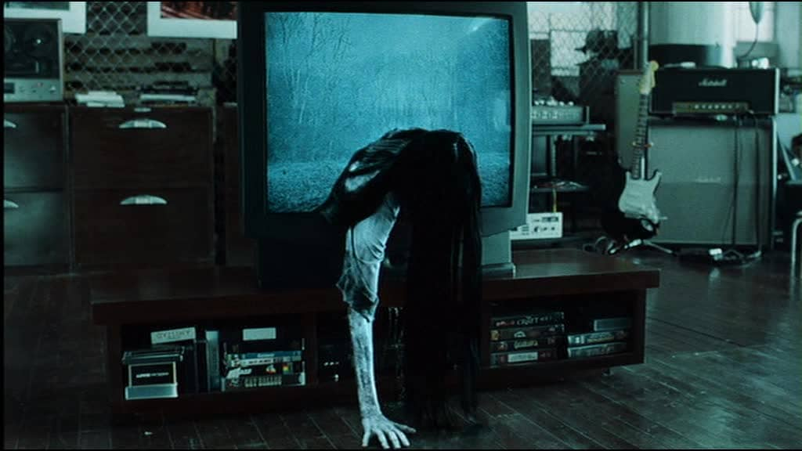
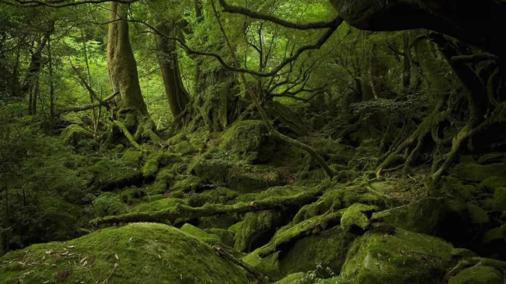
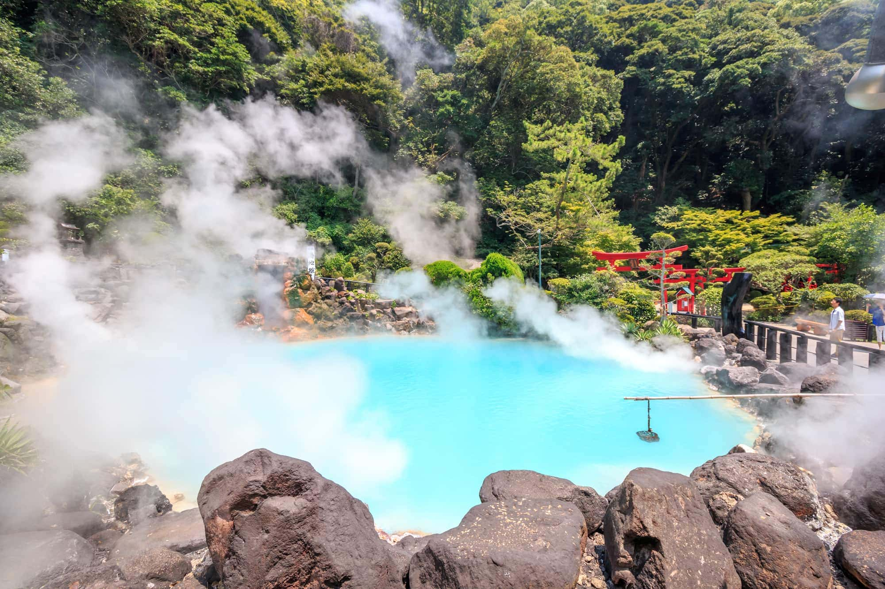
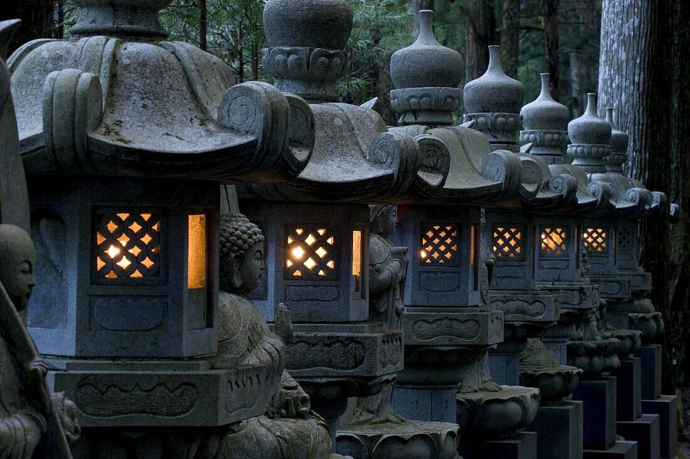
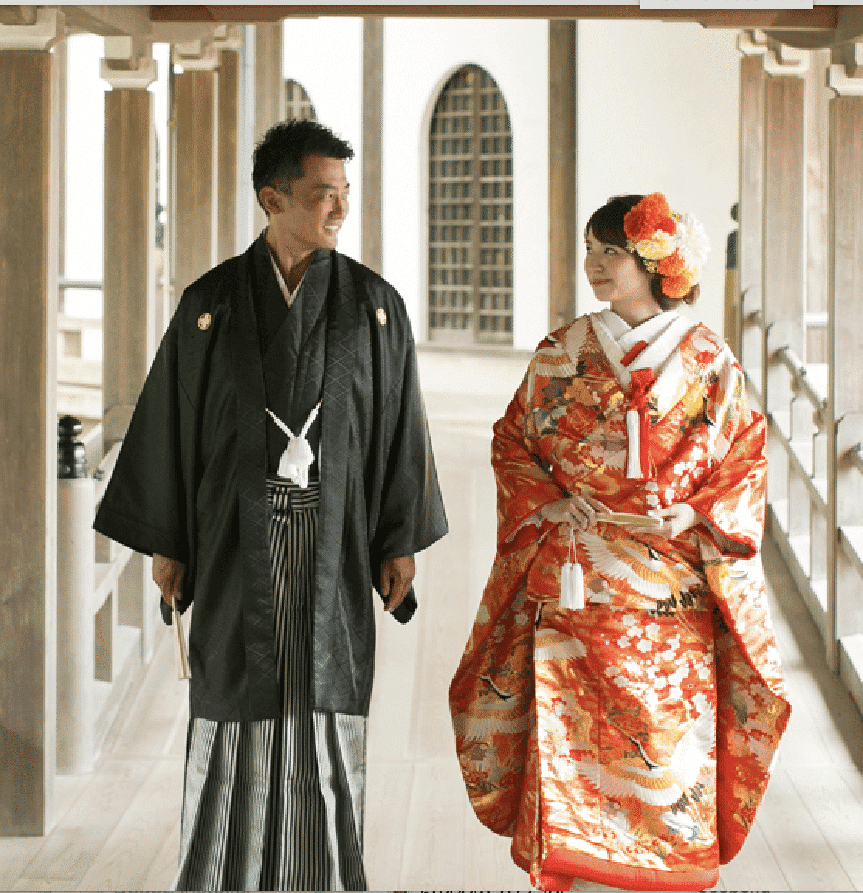
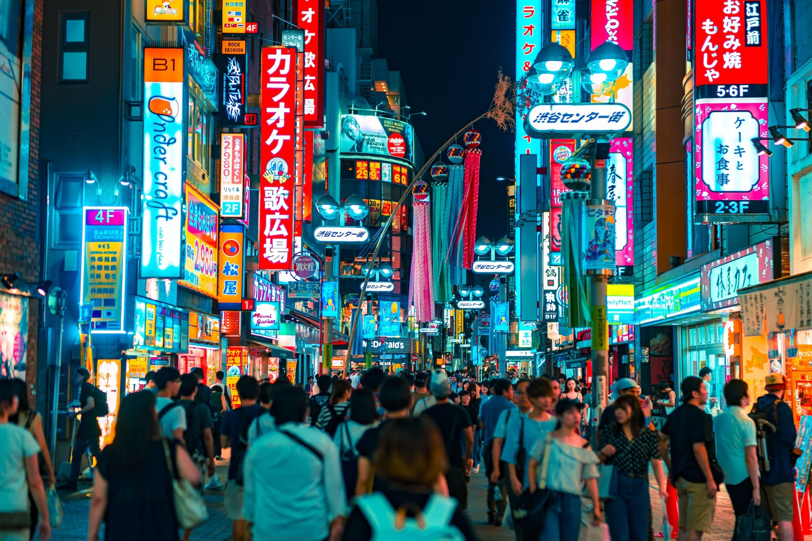

Dawn Avatar Robot Café: Un Vistazo al Futuro de la Hostelería
Autor
El Dawn Avatar Robot Café, ubicado en Tokio, es un
innovador
café que utiliza robots y avatares digitales para ofrecer una experiencia única
a los clientes. Inaugurado en 2021, este café es pionero en Japón, utilizando
tecnología avanzada para interactuar con los visitantes de una manera
completamente nueva.
La propuesta del café se basa en el uso de "avatars" controlados a distancia por
empleados, algunos de los cuales tienen discapacidades que les impiden trabajar
físicamente en el local. Estos avatares permiten a los trabajadores operar
robots desde su hogar o centro de trabajo, lo que les da la oportunidad de
participar en el mundo laboral de una manera inclusiva. Los clientes pueden
interactuar con estos avatares que, a través de pantallas en los robots,
muestran las caras de los trabajadores.

Una persona con
discapacidad controlando un robot
El ambiente del Dawn Avatar Robot Café es futurista y minimalista, evocando un
estilo de ciencia ficción. Los robots realizan tareas como tomar pedidos y
servir bebidas, creando una experiencia eficiente y fluida. Además, el café
ofrece una experiencia de realidad aumentada que agrega un toque de magia
tecnológica a la visita.
Más allá de la fascinación tecnológica, el café representa un esfuerzo por
integrar a personas con discapacidades al mundo laboral de una manera
innovadora. La combinación de robótica, inteligencia artificial y la interacción
humana crea una experiencia única para los clientes, mientras abre nuevas
posibilidades de empleo para quienes enfrentan barreras físicas.
El Dawn Avatar Robot Café no solo es un lugar para disfrutar de un café, sino
también un vistazo al futuro de la hostelería y la inclusión social, donde la
tecnología y la humanidad se encuentran para ofrecer una experiencia
memorable.
La Baja Natalidad y el Envejecimiento de la Población Japonesa: Desafíos para el
Futuro
Autor
Japón enfrenta uno de los problemas demográficos más complejos del
mundo: la baja natalidad y el envejecimiento acelerado de su población. Estos
fenómenos están estrechamente vinculados y representan desafíos importantes para
la economía, los servicios sociales y el futuro de la nación. Japón ha tenido
una de las tasas de natalidad más bajas del mundo durante décadas, mientras que
su población de personas mayores sigue aumentando, lo que plantea serias
preocupaciones sobre el futuro equilibrio social y económico.
La tasa de natalidad en Japón ha ido disminuyendo debido a varios factores, como
la inseguridad laboral, la falta de apoyo a las familias y el alto costo de
vida. Además, las mujeres japonesas, a pesar de su creciente nivel educativo y
profesional, a menudo enfrentan dificultades para equilibrar la vida laboral y
familiar, lo que ha contribuido a la reducción de nacimientos.
Por otro lado, el envejecimiento de la población japonesa se refleja en el
aumento de la esperanza de vida, que ha generado una mayor proporción de
personas mayores en comparación con la población joven. Esta tendencia genera
presión sobre el sistema de pensiones y atención médica, ya que una menor
cantidad de trabajadores debe sustentar una población jubilada cada vez
mayor.
A continuación, se presentan algunos datos clave sobre la población japonesa y
sus tendencias demográficas:
Año
Población Total (millones)
Población Mayor de 65 Años (%)
Tasa de Natalidad (nacimientos por 1,000 habitantes)
2010
128.06
23.1%
8.1
2020
125.8
28.7%
7.0
2030 (proyección)
120.0
33.6%
6.5
Para abordar estos problemas, el gobierno japonés ha implementado políticas como
incentivos para aumentar la natalidad, promoción de la inmigración y reformas
laborales para mejorar la calidad de vida de las personas mayores. Sin embargo,
las soluciones aún son limitadas y requieren de un enfoque más integral y
sostenible.
El Onryō Japonés: El Espíritu Vengativo del Folclore Japonés
Autor
La figura del onryō es una de las más fascinantes y
aterradoras del folclore japonés. Este tipo de espíritu vengativo tiene su
origen en las antiguas creencias sobre los muertos y su capacidad para regresar
al mundo de los vivos para vengarse de aquellos que les hicieron daño en vida.
El término "onryō" se traduce como "espíritu vengativo" y está asociado con
espíritus que buscan justicia o venganza a través de acciones sobrenaturales.

Sadako de la película "The
Ring"
El onryō es especialmente conocido por su capacidad para causar daños a los
vivos, ya sea a través de enfermedades, desastres naturales o muertes
misteriosas. Las historias de onryō se encuentran en numerosas leyendas, y su
imagen es recurrente en el cine y la literatura japonesa. A menudo, estos
espíritus son representados como mujeres de rostro pálido y cabello largo, con
un aura de tristeza y furia.
Una de las figuras más emblemáticas de un onryō es la famosa Sadako
Yamamura, protagonista de la película "Ringu" (1998), cuyo espíritu
vengativo aterroriza a aquellos que ven su video maldito. La historia de Sadako,
aunque ficticia, está inspirada en las viejas leyendas de onryō, que han sido
parte integral del imaginario colectivo japonés durante siglos.
En la tradición japonesa, se cree que para apaciguar a un onryō y evitar su
venganza, es necesario llevar a cabo rituales y ofrendas que permitan al
espíritu encontrar la paz. Estos rituales son una forma de resolver el conflicto
entre los vivos y los muertos, algo que ha influido profundamente en la cultura
y las creencias espirituales de Japón.
Hoy en día, la figura del onryō sigue siendo un símbolo de la conexión entre el
mundo de los vivos y el de los muertos, recordando la importancia de la
justicia, el respeto y la memoria en la cultura japonesa.
Yakushima: El Bosque que Inspiró a ‘La Princesa Mononoke’
Autor
El bosque de Yakushima, ubicado en la isla de
Yakushima, es uno de los lugares más místicos y biodiversos de Japón. Este
bosque, que ha sido declarado Patrimonio de la Humanidad por la UNESCO, es
famoso por sus antiguos cedros, algunos de los cuales tienen más de 1,000 años
de edad. Además de su impresionante biodiversidad, Yakushima ha servido de
inspiración para numerosas obras, siendo una de las más destacadas la película
‘La Princesa Mononoke’ de Hayao Miyazaki.

El bosque de Yakushima
La película, lanzada en 1997, presenta un mundo ficticio en el que los espíritus
de los árboles y los animales luchan contra la destrucción humana del medio
ambiente. La atmósfera densa y mágica de los bosques de Yakushima se refleja
claramente en el paisaje de la película, especialmente en las escenas que
muestran los grandes árboles milenarios y la vegetación exuberante que parece
cobrar vida. Se dice que Miyazaki se inspiró directamente en los paisajes de
Yakushima al crear los escenarios de la película, lo que hace que el bosque sea
aún más emblemático para los fanáticos del cine y la naturaleza.
En ‘La Princesa Mononoke’, los árboles y los espíritus naturales juegan un papel
crucial en la trama, lo que refleja la profunda conexión espiritual entre la
naturaleza y los seres humanos en la cultura japonesa. Esta conexión es evidente
en Yakushima, donde el respeto por la naturaleza y la preservación del medio
ambiente son elementos fundamentales. Los antiguos cedros de Yakushima, como el
famoso “Jomon Sugi”, son considerados guardianes del bosque, y su veneración es
similar a la que se muestra en la película.
El bosque de Yakushima no solo es un lugar que alimenta la imaginación, sino
también un símbolo de la importancia de conservar nuestros ecosistemas. Al
visitar Yakushima, los turistas pueden experimentar la misma atmósfera mágica
que Miyazaki plasmó en su obra, lo que convierte al bosque en un destino único
tanto para los amantes de la naturaleza como para los cinéfilos que buscan
conectar con la esencia de ‘La Princesa Mononoke’.
Umi Jigoku: El Infierno Azul de Beppu, Japón
Autor
El Umi Jigoku, también conocido como el "Infierno
Azul", es uno de los atractivos naturales más impresionantes de Japón, ubicado
en Beppu, en la isla de Kyushu. Este onsen (baño termal) se caracteriza por sus
aguas de un intenso color azul debido a la alta concentración de minerales como
el azufre. Es una de las ocho fuentes termales de Beppu, conocidas
colectivamente como los "Jigoku" o "Infiernos".

Las aguas termales del Umi
Jigoku
Lo que hace único al Umi Jigoku es su espectacular color y el contraste con el
paisaje circundante. Aunque no es apto para bañarse debido a las altas
temperaturas, su belleza visual atrae a miles de turistas cada año. Los
visitantes pueden caminar alrededor de los estanques y disfrutar de vistas
impresionantes, mientras aprenden sobre la historia y las propiedades de las
aguas termales.
La zona también cuenta con un pequeño jardín y una casa de té, donde los turistas
pueden relajarse mientras observan el increíble entorno. Además, el Umi Jigoku
es conocido por la presencia de una estatua de Buda, que se alza sobre las
aguas, añadiendo un toque de serenidad al paisaje volcánico.
El Umi Jigoku no solo es un lugar de belleza natural, sino también un
ejemplo del vínculo profundo entre los japoneses y sus aguas termales. Las aguas
termales en Japón no solo son vistas como un lujo, sino también como una fuente
de salud y bienestar, y el Umi Jigoku es un excelente ejemplo de cómo la
naturaleza y la cultura japonesa se combinan de manera perfecta.
Okunoin: El Sagrado Cementerio de Koyasan
Autor
Okunoin es uno de los lugares más espirituales y misteriosos de
Japón. Ubicado en Koyasan, en la región montañosa de Wakayama,
Okunoin es el cementerio más grande de Japón y un importante destino para los
peregrinos budistas. Este lugar alberga miles de tumbas, muchas de ellas
dedicadas a figuras importantes de la historia religiosa de Japón, incluidos
monjes y emperadores, lo que convierte a Okunoin en un lugar de gran significado
histórico y espiritual.

Las linternas de piedra del
Okunoin
El acceso a Okunoin es una experiencia única. Los visitantes deben recorrer un
largo y sereno sendero flanqueado por cientos de miles de estelas funerarias. El
sendero de 1.5 kilómetros que lleva al santuario está rodeado por altos
árboles que proporcionan una atmósfera tranquila y reverente. A lo largo del
camino, los visitantes pueden encontrar monumentos dedicados a antiguos monjes y
otros personajes ilustres que han sido venerados a lo largo de los siglos.
En el centro de Okunoin se encuentra el Garan, el santuario
donde se cree que reposa el cuerpo del fundador del budismo Shingon, Kōbō
Daishi. Según la tradición, Kōbō Daishi permanece en un estado de
meditación eterna, esperando el regreso de Miroku, el Buda del futuro. Esta
creencia es central en la espiritualidad de Okunoin, que atrae a miles de
visitantes cada año, quienes vienen a rendir homenaje y buscar paz espiritual.
El ambiente místico de Okunoin, especialmente al amanecer o al atardecer, cuando
la niebla envuelve el sendero y las estatuas parecen cobrar vida, crea una
sensación de conexión profunda con lo divino. Es un lugar donde el pasado y el
presente se encuentran, y donde la tranquilidad y la espiritualidad impregnan el
aire.
Visitar Okunoin no solo es una experiencia cultural, sino también un viaje
espiritual que permite a los visitantes reflexionar sobre la vida, la muerte y
el más allá. Sin duda, es un lugar que deja una huella indeleble en aquellos que
tienen la suerte de recorrerlo.
El Cine Japonés: Una Ventana al Alma de Japón
Autor
El cine japonés es una de las industrias
cinematográficas más influyentes y respetadas a nivel mundial. Desde sus inicios
en el siglo XX, ha producido algunas de las películas más aclamadas por la
crítica, con un estilo único que combina la tradición con la innovación. A lo
largo de las décadas, el cine japonés ha capturado las emociones, las
tradiciones y los dilemas sociales de la cultura japonesa, convirtiéndose en una
ventana al alma del país.
Algunos de los directores más reconocidos internacionalmente han nacido en Japón,
y sus obras siguen siendo objeto de estudio y admiración. Entre ellos
destacan:
Akira Kurosawa, conocido por su épica “Los Siete
Samuráis”, que influyó en todo el cine de acción moderno.
Hayao Miyazaki, el maestro de la animación, creador de
películas como “Mi vecino Totoro” y “El viaje de Chihiro”,
que no solo cautivan por su belleza visual, sino por sus profundas lecciones
sobre la vida y la naturaleza.
Yasujiro Ozu, célebre por sus reflexivas películas
familiares, como “Cuentos de Tokio”, que capturan las tensiones
sociales y emocionales de Japón post-guerra.
El cine japonés también ha sido pionero en géneros como el anime,
que ha alcanzado una popularidad global. Con su mezcla de acción, fantasía y
exploración emocional, el anime japonés ha dejado una huella imborrable en la
cultura pop mundial. Algunas de las obras más representativas del anime
incluyen:
“Akira” (1988), un clásico que ayudó a
definir el futuro del anime.
“Neon Genesis Evangelion” (1995), un anime
psicológico que marcó una nueva era en la animación japonesa.
“Your Name” (2016), una historia de amor y destino
que encantó a audiencias de todo el mundo.
Hoy en día, el cine japonés sigue siendo una parte vital de la cultura global,
con una rica historia que continúa evolucionando y mostrando al mundo las
complejidades de la sociedad japonesa a través de su cámara.
La Ropa Tradicional Japonesa: Una Historia de Estilo y Cultura
Autor
La ropa tradicional japonesa tiene una larga
historia y está profundamente ligada a la cultura y las costumbres del país.
Aunque en la vida diaria los japoneses suelen vestir ropa occidental, las
prendas tradicionales siguen siendo un símbolo de la identidad cultural y se
usan en ocasiones especiales, como ceremonias, festivales y bodas.

Pareja japonesa vistiendo
ropa tradicional
El kimono es la prenda más icónica de Japón y representa la
elegancia y la formalidad. Esta prenda, que se caracteriza por su corte recto y
mangas largas, se suele hacer de seda y se adorna con bellos diseños que varían
según la estación del año, la ocasión y el estatus de la persona que lo lleva.
El kimono se acompaña de un obi, un cinturón ancho que se anuda en la
parte posterior, creando un hermoso efecto visual. Su uso requiere destreza, ya
que la correcta colocación del kimono y el obi es fundamental.
Otra prenda tradicional importante es el yukata, una versión más
ligera y cómoda del kimono, generalmente hecha de algodón. El yukata se utiliza
principalmente en festivales de verano o en baños termales, conocidos como onsen.
A diferencia del kimono, el yukata es más fácil de poner y, aunque igualmente
elegante, tiene un aire más relajado y festivo.
El hakama es un tipo de pantalón tradicionalmente usado por
hombres, aunque también puede ser llevado por mujeres en eventos especiales,
como ceremonias de graduación. Esta prenda, que generalmente se usa sobre un
kimono, es conocida por sus pliegues amplios y su aspecto solemne.
La ropa tradicional japonesa no solo es un símbolo de la moda, sino también de la
profunda conexión de Japón con sus tradiciones, estacionalidad y estética. Cada
prenda tiene un significado cultural y una historia que continúa siendo
celebrada en diversas ceremonias y eventos a lo largo del año.
Japón Moderno: Una Fusión de Tradición y Tecnología
Autor
Japón es un país conocido por su habilidad para fusionar lo antiguo
con lo moderno. En sus vibrantes ciudades, la tradición y la tecnología
coexisten armoniosamente, creando un paisaje único donde lo histórico se
encuentra con lo futurista. Esta mezcla de elementos tradicionales y
vanguardistas es lo que define al Japón moderno.

Una transitada calle de
Japón
Las grandes ciudades japonesas como Tokio y Osaka son un reflejo
perfecto de esta dualidad. Mientras que en los rascacielos de Tokio se
encuentran algunas de las tecnologías más avanzadas del mundo, como robots y
sistemas de transporte ultrarrápidos, también se pueden encontrar templos
budistas, jardines zen y barrios tradicionales que han permanecido prácticamente
intactos durante siglos. El contraste entre los shintoistas y los innovadores
rascacielos es un ejemplo claro de cómo el Japón moderno abraza tanto
su pasado como su futuro.
El avance tecnológico en Japón es innegable. La nación es líder
en la robótica, la inteligencia artificial y la electrónica de consumo. Grandes
empresas japonesas, como Sony, Toyota y Panasonic, son conocidas por sus
innovaciones y por empujar los límites de lo posible. Las ciudades
inteligentes y los sistemas de transporte público altamente eficientes
son también parte de la vida cotidiana, haciendo que Japón sea un lugar donde la
tecnología facilita enormemente la vida de las personas.
A pesar de su modernización, Japón mantiene una fuerte conexión con su cultura
y costumbres. La ceremonia del té, el arte del origami, y los
festivales tradicionales continúan siendo parte esencial de la vida diaria.
Además, las artes tradicionales como el teatro Noh, el Kabuki y el Ikebana
siguen siendo prácticas vivas y apreciadas por los japoneses.
Así, Japón ha logrado crear una identidad que combina la vanguardia de la
tecnología con el respeto por su rica historia y cultura. Este equilibrio entre
lo antiguo y lo nuevo es lo que hace que Japón moderno sea un país fascinante y
único.